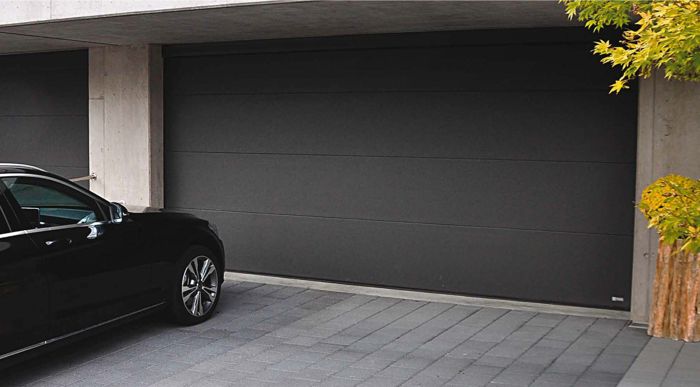

Sektionaltor
Läuft senkrecht nach oben und unter die Decke. Volle Durchfahrtsbreite, kein Schwenkbereich vor der Garage. In Stahl mit 40 mm Paneel oder in Echtholz mit 80 mm Lamellen.
- Ideal bei kurzen Einfahrten
- Wärmegedämmte Paneele
- Glatt, Holzoptik oder Echtholz